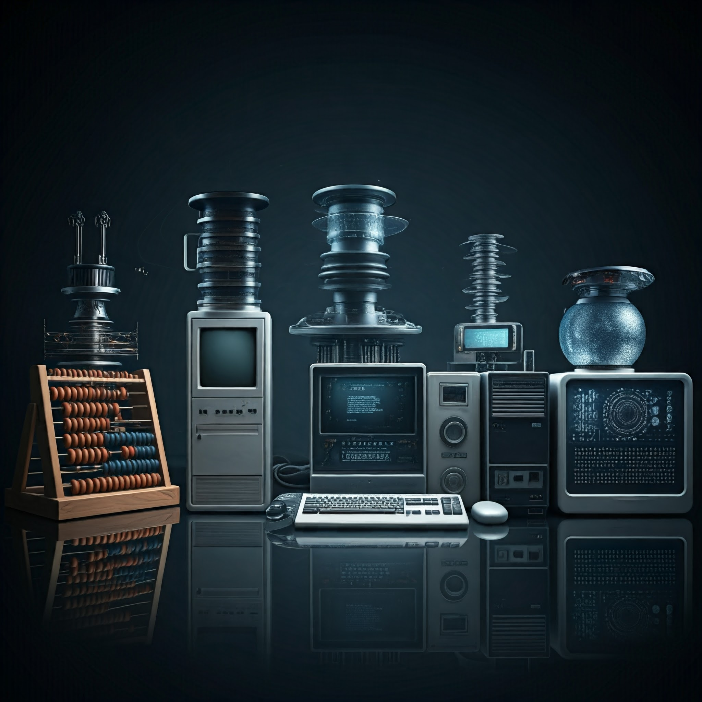

|  |
A evolução da informática, desde as suas formas mais primitivas até os sistemas mais avançados que conhecemos hoje, é um testemunho da criatividade e inovação humana. Desde as antigas práticas de contagem, como a dactilonomia, até o desenvolvimento de dispositivos como o ábaco e a máquina analítica de Babbage, a busca por métodos mais eficazes de cálculo e processamento de informações sempre impulsionou o progresso tecnológico. A introdução de máquinas como o ENIAC e o EDVAC estabeleceu as bases para a arquitetura dos computadores modernos, enquanto invenções mais recentes, como os processadores avançados e a computação quântica, prometem revolucionar ainda mais a tecnologia. Com a transição para a era digital, o impacto das novas tecnologias é profundo e abrangente. A computação quântica, a inteligência artificial e o aprendizado de máquina estão redefinindo o que é possível em termos de processamento de dados e automação. A computação em nuvem e a Internet das Coisas estão transformando a maneira como interagimos com a tecnologia e o mundo ao nosso redor, oferecendo novas oportunidades e desafios. A evolução contínua dos hardwares e softwares, com inovações como telas dobráveis e experiências imersivas de realidade aumentada e virtual, evidencia uma era de transformação tecnológica constante e dinâmica. Assim, a história da informática não é apenas uma crônica de invenções e desenvolvimentos técnicos, mas também um reflexo da capacidade humana de imaginar, criar e aprimorar ferramentas que moldam o nosso futuro. Cada avanço, por menor que pareça, contribui para um panorama tecnológico cada vez mais sofisticado e interconectado, demonstrando como o progresso na computação continua a influenciar e transformar todos os aspectos da vida moderna. |